Analysis of UFO Photographic Evidence
Introduction
La 1ère photographie signalée d'un ovni après l'observation
d'Arnold du fut réalisée le à Seattle (Washington). Ruppelt,
1956, p. 32. L'objet fut identifié comme étant un ballon
météo. Cette 1ère photographie est typique de la preuve photographique qui s'est accrue depuis : elle accompagnait
une "vague" de signalements et n'était pas concluante pour établir l'existence de
quelque appareil extraordinaire.
Bien que les preuves photographiques, par contraste avec le témoignage verbal, puisse être considéré comme une
donnée "dure", l'expérience a montré que l'on ne peut supposer que la photographie d'un disque aérien soit plus
crédible qu'un rapport verbal. Même s'il était vrai que les appareils photos ne mentent jamais, les photographes le
font parfois. Une photographie pourrait être plus intéressante qu'un récit verbal ; de fait, si nous savions que les
"soucoupes volantes" existaient, les photographies les mieux documentées seraient d'une très grande valeur pour
établir leurs propriétés. Mais en l'absence de preuve de l'existence de tels appareils, nous nous préoccupons à ce
stade de la crédibilité des signalements.
Le cas le plus convainquant de preuve photographique impliquerait non seulement des photographies multiples mais des
photographes multiples, non reliés et ne se connaissant pas l'un-l'autre, éloignés d'une distance considérable (de
préférence des dizaines de miles), et dont les photographies montrent de manière concluante le même ovni. Aucun cas
de ce type n'est connu du projet du Colorado.
Les études de photographies d'ovnis par le projet du
Colorado sont basées sur cette approche. La question centrale de l'étude est : le rapport a-t-il une valeur
probante quelconque à établir l'existence des soucoupes
volantes ?
Une question vraiment secondaire en importance (et menant à des arguments improductifs) est :
Quelle est l'explication finale de chaque photographie ?
C'est-à-dire que, notre tâche principale est d'examiner les preuves photographiques d'ovnis supposées indiquer
l'existence de "soucoupes volantes," et se forger un jugement
quant à savoir si les éléments présentés soutiennent cette assertion. Le preuve photographique est particulièrement
ouverte à la controverse que l'on doive établir ce qui est montré, avant que l'on puisse dire qu'il ne s'agit pas
d'une "soucoupe volante". Cet argument n'est pas valide. Il
n'est pas nécessaire de prouver qu'un objet est une orange avant d'établir qu'il ne s'agit pas d'un champignon. Des
tentatives exhaustives pour établir l'identité de chaque objet ou image enregistré ne furent donc pas faites. Ceci
bien que des interprétations possibles aient été suggérées dans de nombreux cas où il fut conclu (pour une raison ou
une autre) qu'il n'y avait pas de preuve d'un phénomène inhabituel.
Sélection de cas
Le temps et les financements n'ont pas permis une enquête exhaustive de tous les cas intéressants. Environ 90 % des
cas pourraient recevoir une 2nde ou 3ème priorité à lors d'une inspection ou d'une brève étude. Une telle évaluation
de priorité a été basée sur un jugement que le cas avait peu de valeur potentielle à établir l'existence de
"soucoupes volantes". Les 10 % restants des cas étaient de 1ère priorité et demandèrent une étude intensive,
certains jusqu'à un mois d'effort à plein temps. Un "residu" d'environ 2 % à 5 % de l'ensemble des cas reste
inexpliqué après de processus. C'est un tel résidu qui est au coeur du problème ovni (à la fois dans les cas
photographiques et plus généralement).
Le comité O'Brien (voir annexe A) a suggéré que l'étude de l'université des
ovnis proposée mettent l'accent sur les signalements actuels. Cependant, certains cas anciens "classiques" des 2
dernières décades contiennent les indices photographiques les plus significatifs. Les négliger aurait serait ouvert
à la critique avec raison. Ainsi, l'étude photographique présente inclut à la fois de nouveaux cas et des
réévaluations indépendantes d'anciens cas.
Sources de données
Projet Blue Book
Le matériel sur un certain nombre de cas anciens a été obtenu du Bureau des Phénomènes Aériens
(Projet Blue Book) de la
base aérienne de Wright-Patterson (Ohio). Dans de nombreux cas,
ces dossiers n'étaient pas suffisamment organisés ou complets pour permettre une évaluation intelligente du
rapport. Une enquête plus poussée fut menée dans ces cas.
APRO
Des relations cordiales ont été maintenues avec l'APRO, et à travers
l'aimable assistance de M. et Mme
J. Lorenzen la plupart du matériel photographique de 1ère ou
2nde génération a été accessible.
NICAP
Des contacts pour l'échange d'informations sur les cas photographiques ont été établis avec le
NICAP au printemps , et des dossiers sur un certain
nombre de cas nous ont été rendus disponibles à ce moment.
J. E. McDonald
L'aide du Dr. McDonald, de l'Institut de Physique
Atmosphérique (Université de l'Arizona), qui mena une étude des phénomènes ovnis de manière concurrente à cette
étude, fut inestimable pour porter un certain nombre de cas à notre attention.
Autres
De nombreux individus nous ont soumis des rapports directement et d'autres cas récents ont fait l'objet d'enquêtes
par nos équipes sur le terrain. Certaines organisations de presse, en particulier BBC, Time-Life, Inc.,
et United Press International ont été d'une grande aide pour l'obtention de matériel. Le Dr.
R. M. L. Baker, de Computer Sciences, Inc., nous a
aimablement donné accès à ses dossiers sur les films de Great
Falls, Tremonton, et Vandenberg AFB. Le Dr.
J. Allen Hynek, de l'Université Northwestern a également
fourni une aide de valeur dans la fourniture de matériaux pour analyse.
Données masquées
Le problème des données masquées est caractéristique de l'étude des phénomènes ovnis. Seulement
12 % environ des personnes ayant vu des objets volants qu'il ne peuvent identifier en ont
effectivement signalé l'observation. Le fait que nous n'ayons connaissance que d'une petite fraction de
l'ensemble des observations d'ovnis et l'expérience des enquêteurs découvrant des photographies suggère que nous
avons largement moins de la moitié des photographies considérées montrer des ovnis par leurs détenteurs. Des
photographies qui pourraient concerner l'existence d'appareils extraordinaires nous avons probablement une
plus grande fraction, puisqu'elles sont plus intéressantes pour leurs propriétaires. La distinction est qu'une photo
d'ovni pourrait juste montrer une source de lumière ponctuelle, ou un blob amorphe, tandis qu'une photo de
"soucoupe volante" supposée doit montrer certains détails. Mais même dans ces cas, la fraction pourrait bien être
moins de la moitié.
Les raisons de l'existence de données cachées incluent :
-
une apathie de la part du photographe,
- une ignorance de quoi faire avec les photographies,
- la peur du ridicule,
- la peur de s'impliquer avec les autorités dans des situations impliquant des restrictions de sécurité ou
militaires (e.g. le cas de Fort Belvoir),
- la peur des restrictions dans le JANAP-146.
Il est également possible que les données, générées par divers équipements
d'enregistrement technique, tels que des caméras boréales plein ciel, ou le Réseau Prairie représentent une
autre source "cachée".
Enfin, il y a une autre classe de "données cachées" : les observations supposées avoir eu lieu sur diverses bases
militaires mais qui auraient été supprimées par des autorités militaires ou du renseignement. Nous avons entendu de
nombreuses allégations de tels cas. Généralement elles n'étaient pas suffisamment détaillées pour être fructueuses,
et dans seulement 1 cas il a été possible pour nous, même avec la coopération de l'Air Force, de localiser quelques
photographies supposées d'ovnis. De telles allegations de suppression pourraient typiquement émerger comme le
résultat d'incidents tels que celui décrit dans le cas 51. Dans ce cas un ovni
brillant fut enregistré par plusieurs caméras de poursuite à la base aérienne de Vandenberg. L'ovni fut décrit comme
"fonçant vers le haut derrière" une fusée lors d'un lancer. Les enquêteurs du projet retrouvèrent les films en
question sans difficulté. Une étude de ceux-ci identifia de manière concluante l'ovni comme étant la planète
Vénus. Dans le même temps, cependant, l'histoire avait atteint le
stade de la rumeur, et il est probable que le résultat en ait été que la croyance qu'un ovni avait suivi une fusée
ait été répandue.
Qualité des données ovnis photographiques
Planche 1 - Nuage lenticulaire photographié au Brésil
APRO
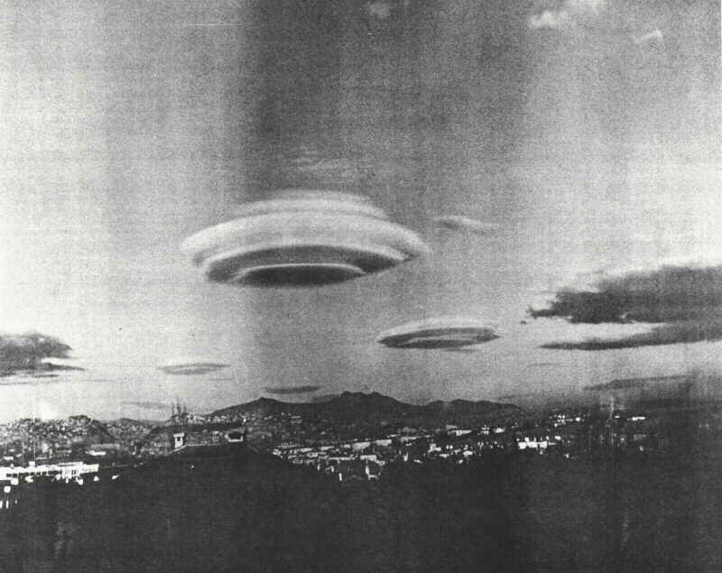
Les propriétés statistiques ou la quantité des données
photographiques sont moins importantes que le contenu d'un cas particulier qui pourrait fortement indiquer
l'existence d'un phénomène non reconnu jusqu'ici. Néanmoins, une partie du problème est que la plupart des données
sont de qualité très médiocre. Un coup d'oeil sur les périodiques et livres typiques consacrés aux ovnis l'illustre
bien. Nombre de photographies sont floues, généralement en raison d'une mise au point médiocre. De nombreuses sont
mal traitées ou surexposées. De nombreuses, généralement parce qu'il s'agit de fabrications faites avec de petites
maquettes trop proches de l'appareil photo, montrent, devant des fonds précis, des objets désespérement hors focale.
De nombreuses photographies ne donnent pas l'impression subjective d'une entité métallique ou lumineuse volant à
travers les airs à une distance modérée des observateurs.
Planche 2 - Sous-Soleil NCAR
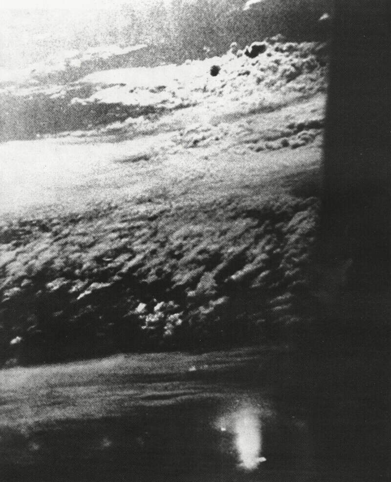
Plus spécifiquement une large partie des données est inappropriée à l'analyse. Les photographies de nuit montrant
des sources ponctuelles ou des blobs amorphes sans arrière-plan ni avant-plan tombent dans cette catégorie. Les
photographies de jour d'objets de très petite taille angulaire sont également de peu de valeur. Un grand nombre de
rapports consiste en seulement 1 photographie, et les photographies seules sont de moindre valeur photogrammétrique
que des ensembles.
Des dommages aux négatifs les rendent souvent sans valeur dans un but d'enquête. Un enquêteur rendant visite à un
témoin trouva un bambin jouant sur le sol avec les négatifs
(McMinnville, cas
46). Un point crucial sur un autre ensemble de négatifs fut brûlé par le lâché d'une allumette, affirmé comme
un accident (North Eastern, cas 53). La perte des négatifs ou épreuves
d'origine est signalée, comme dans Santa Ana
(cas 52).
Un témoignage descriptif précis, même dans des cas photographiques, est également difficile à obtenir. Par exemple,
un témoin décrivit un ovni comme étant moitié aussi grand que la
Lune
; sa photographie et son croquis
montrent un disque ayant un diamètre angulaire d'environ 15 °.
Phénomènes naturels photographiés en tant qu'ovnis
Un certain nombre de phénomènes naturels, bien connus dans diverses branches de la communauté scientifique, mais
peu connus du grand public, ont été rapportés comme étant des ovnis. 3 classes d'entre eux sont les météorologiques,
astronomiques et photographiques.
Planche 3 - Exposition de "traînée" temporelle de la
Lune
Hartmann, William K.
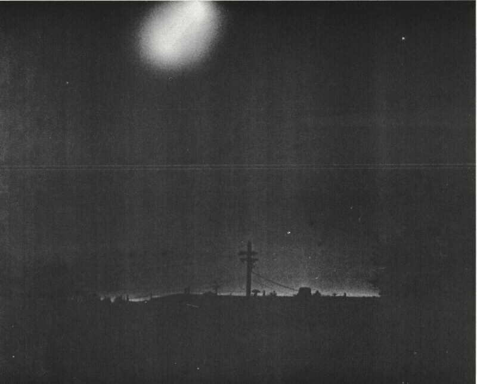
La planche 1 montre un excellent exemple de nuage
lenticulaire. Ces nuages fins sont généralement liés à des irregularités dans les élévations au sol (et donc classés
comme nuages "orographiques"), et apparaissent parfois
empilés, l'un au-dessus de l'autre, comme une pile de soucoupes. Un certain nombre est apparut les signalements
d'ovnis.
La planche 2 illustre un sous-Soleil, produit par le reflet
du Soleil off a laminar arrangement of flat ice crystals
Minnaert, 1954, p. 203. Le cas de l'appareil du Gulfstream est proposé d'être attribué
à un sous-Soleil (voir cas
54).
Planche 4 - "Ovni" rapporté et identifié comme un défaut de film. Photo du Mont Palomar
[Melle Z. Rungee]
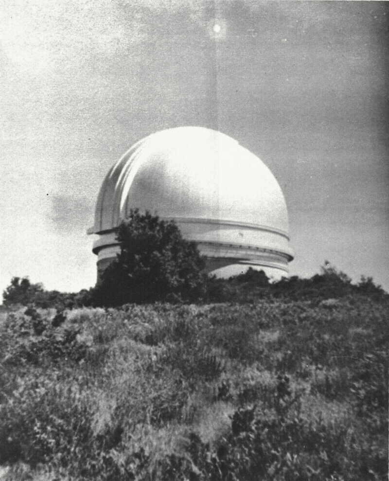
La planche 3 est une exposition temporelle de la Lune,
montrant une traînée due à la rotation de la Terre.
L'explication d'une telle photographie de la Lune
est évidente pour quiconque est familier de photographies astronomiques. Encore une image semblable montrant les
traînées de la Lune et de
Vénus a été largement imprimée dans les journaux à travers le
pays en . Les traînées furent décrites comme 2 ovnis.
Bien que les aurora displays puissent produire des arcs colorés de formes et luminosité diverses en déplacement
rapide, il ne semble pas que les aurores boréales soient impliquées dans un nombre substantiel de signalements
d'ovnis. Aucune photographie d'ovnis n'a été attribuée à des aurores boléales dans cette étude.
A number of purely photographic effects can result in UFO-like images. Two classes are very common. The first is
film damage. Creases or unusual pressure produce dark images on negatives and bright spots on prints made from them.
Chemical damage during development can produce either bright or dark spots on negatives or prints. The second class
is internal reflections, or lens flares produced by unwanted light paths through the camera optics. Many widely
circulated UFO photographs are unquestionably the result of lens flares. Symmetry about a line connecting the flare
to a bright light source in the photograph is usually the clue to identification of a lens flare photograph.
Planche 5 - "Ovni" signalé et identifié comme un effet du développement. Pinawa, Manitoba
[témoin]
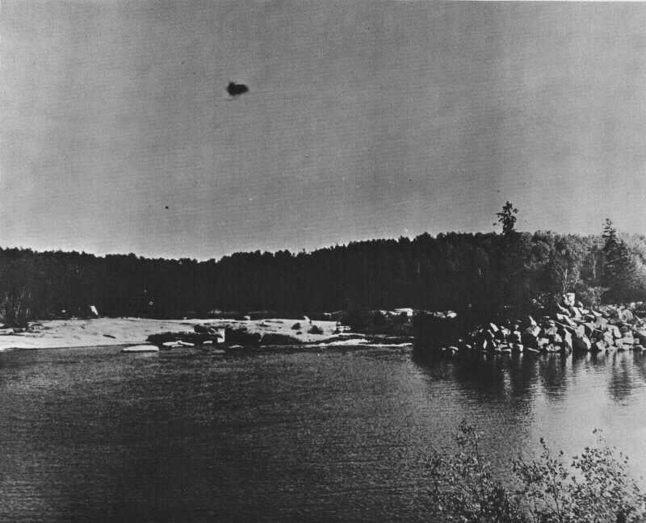
Les planches 4 et 5 montrent des exemples d'"ovnis" signalés et identifiés comme des défaux de film, et la planche
6 montre un exemple de lens flare
Voir également Menzel, Donald Howard et Boyd, 1963.
Des objets fabriqués par l'homme comme des ballons et des
traînées d'échappement de fusée particulièrement illuminées par un Soleil bas lors du crépuscule ont également
produit de nombreux signalements d'ovnis (appareil du N. M., cas 55). Un
certain nombre de photographies de sources ponctuelles brillantes presque stationnaires dans la lumière du jour ou
le ciel du crépuscule pourrait être dû à des ballons.
Fabrications
Planche 6 - Lens flare (en haut à droite) provoqué par une lampe de rue dans la photographie de la
Comète Ikeya Seki [Hartmann]
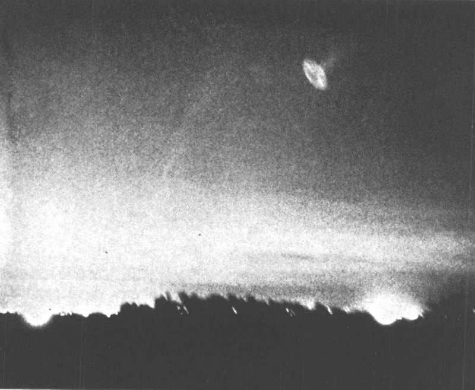
Les fabrications représentent un problème délicat. Nulle part dans la discussion des cas photographiques je n'en ai
étiquetté un de manière concluante comme étant un canular,
bien que j'aie montré que cette hypothèse soit tout à fait satisfaisante dans un certain nombre de cas.
Les canulars ne sont pas nouveaux dans les enquêtes sur
les ovnis. L'incident de Ile Maury (Washington) de
a été qualifié de premier, peut-être second meilleur, et plus sale canular de l'histoire des ovnis
[Ruppelt, 1956].
Des photographies qui auraient été prises par l'un des témoins de l'incident avaient été "égarées", dit-il.
Finalement, lui, un compagnon et un "enquêteur" engagé par un éditeur de magazine
admirent que l'incident était une fabrication. Avant que l'affaire soit classée, beaucoup d'argent et de temps
avaient été dépensés, et 2 officiers enquêteurs de l'Air Force avaient été tués lorsque leur B-25 de l'Air Force
s'était écrasé au cours de l'investigation de l'"observation". D'après
Ruppelt, le gouvernement fédéral envisagea de poursuivre les
auteurs du canular, mais abandonnèrent l'idée par la suite.
Planche 7 - Photo d'ovni "physiquement fabriqué" réalisée en lançant un maquette en rotation
[Hartmann]
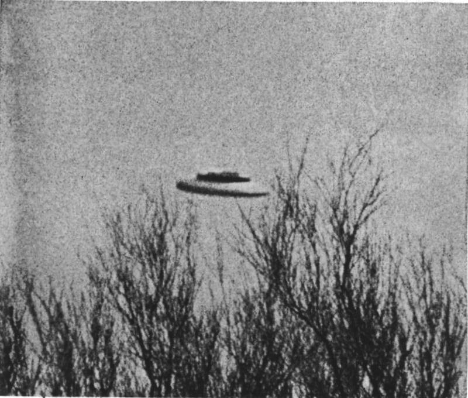
Souvent une photographie apparemment fabriquée pour amuser des amis résulte en un signalement d'ovni véritable. Les
amis prennent la photographie au sérieux et en parlent à d'autres. Finalement un journal local imprime le cliché et
l'histoire. A partir de là elle peut être distributée au niveau national par les services de presse wire, ou l'une
des organisations privées d'enquête sur les ovnis telles que l'APRO ou le
NICAP. Au regard de l'intérêt de loisir démontrable de certains
personnes, en particulier de jeunes personnes, à produire des "photos de soucoupes volantes", on doit être
particulièrement circonspect sur toute photo d'ovni supposée qui aurait pu être facilement fabriquée dans les
circonstances.
Planche 8 - Photo d'ovni "physiquement fabriqué" - une maquette suspendue
Hartmann
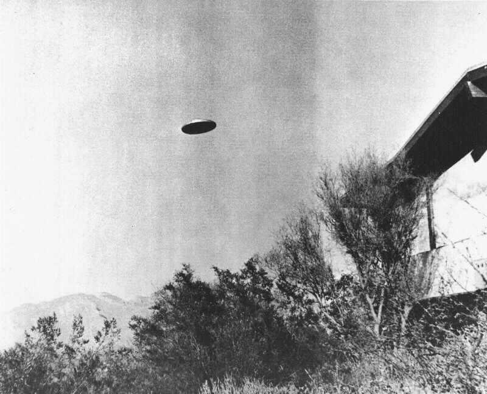
Les fabrications pourraient être classées en 2 grandes catégories : "physiques," d'un objet réel, qui est
alors supposé être un ovni ; ou "optique", la production par des moyens optiques ou autres d'une image
faussement supposées être une entité physique réelle dans la scène. Des négatifs retouchés, des double expositions
et des images surimposées sont des exemples de ces derniers. Généralement, les fabrications physiques meet tests of
consistence in lighting and shadow but fail tests of size or distance. Most commonly, photographs of models are out
of focus, or have inconsistent focus between the "UFO" and other objects at its alleged distance. Optical
fabrications, on the other hand, may show inconsistencies in lighting between background and UFO details, or in the
case of montages, image flaws.
La planche 7 est un exemple du type le plus simple et le plus courant des fabrications physiques - une maquette en
forme de disque jettée en l'air à la main. Les planches 8 et 9 sont des exemples de fabrications plus complexes
d'une maquette suspendue par une ficelle et d'une photographie de nuit d'une maquette hand-held illuminée par une
lampe-torche. Ces 3 photographies ont été réalisées par l'auteur. Les planches 8 et 9 furent réalisées pour
comparison avec les photographies des ovnis de Santa Ana et du Nord Est (cas 52
et 53). Les planches 10, 11 et 12 sont des exemples de fabrications optiques
réalisées par l'auteur.
Techniques d'analyse
Planche 9 - Photo d'ovni "physiquement fabriqué". Exposition temporelle de nuit d'une maquette tenue à
la main et illuminée par une lampe torche (Cf. le cas de Beaver, Pennsylvanie)
Hartmann
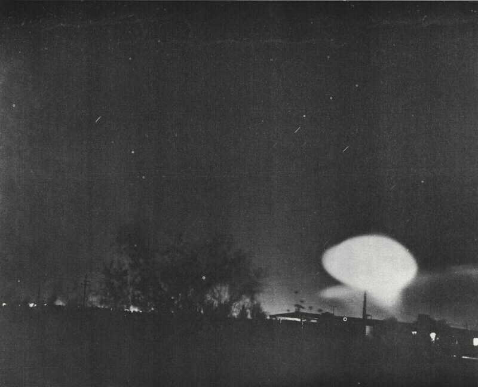
Les indices photographiques acquièrent une valeur probante seulement lorsque les phénomènes naturels connus peuvent
être exclus et qu'il peut être montré qu'une fabrication n'était pas évidente ou facile à réaliser.
Planche 10 - Photo d'ovni "physiquement fabriqué" - Double exposition d'une lampe elliptical surimposée
sur un paysage (Cf. cas de El Guapo, Venezuela, Bulletin de l'APRO) [Hartmann]
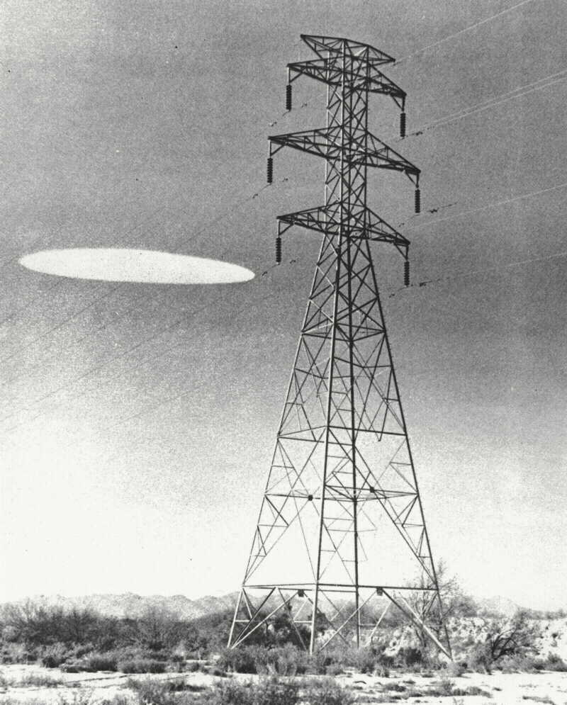
Au début de l'étude, il fut décidé de ne pas sélectionner ou analyser chaque cas selon une routine prédéterminée.
Plutôt, les cas furent étudiés en termes de leurs caractéristiques individuelles. Les caractéristiques de diagnostic
incluèrent des propriétés telles que :
-
stéreoscopie potentielle,
- rapport de témoins visuels multiples,
- déplacements de nuages,
- utilisation de brume pour définier la distance,
- données précises d'altitude et d'azimuth,
- structure et forme de l'objet,
- géométrie du mouvement, et
- géométrie de l'éclairage et des ombres.
Une sélection initiale de cas à étudier fut également influencée par le degré auquel d'autres personnes étudiant
les phénomènes ovnis les considéraient comme significatifs.
Au cours de l'enquête, une analyse des caractéristiques antérieures de photographies d'ovnis résultèrent dans notre
développement d'un ensemble de protocoles utiles pour affecter des priorités aux photographies d'ovnis pour étude.
Ces résultats sont décris en section 10 de ce chapitre.
Les cas sélectionnés pour enquête furent analysés aussi complètement que possible. Les techniques sont démontrées
dans les rapports des cas eux-mêmes (partie 4, chapitre 3).
Examen et synthèse
Planche 11 - Photo d'ovni "physiquement fabriqué". Dessin cut-out surimposé sur une épreuve et recopié
Hartmann
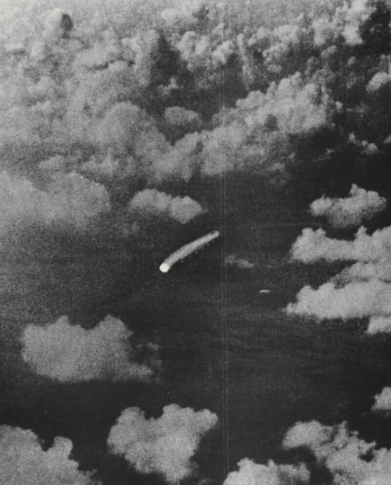
Le projet a rassemblé des informations sur cas 35 photographiques ayant eut lieu entre .
Ceux-ci pourraient être considérés comme étant plus ou moins un échantillon représentatif de cas photographiques.
Sur cet échantillon actuel de 35 cas seuls 2, Calgary et Pacifique Nord (cas 57
et 56) furent sélectionnés initialement comme des cas de 1ère priorité. Lors de
l'enquête, aucun des cas n'apporta de données considérées comme étant de valeur probante. Les cas de 2nde priorité
au sein du groupe furent Camarillo (probablement identifié comme des débris aériens),
l'appareil du Gulfstream (sous-soleil) et Sonora (débris aériens). Nombre des cas restants de
plus faible priorité avaient une faible étrangeté ou des données insuffisantes pour une analyse.
Planche 12 - "Fabrication optique". Pleine Lune au milieu d'une scène de coucher de Soleil -- une
impossibilité physique. L'image de la Lune (derrière l'observateur) a été reflétée dans une feuille de verre à
travers la photo a été prise Hartmann
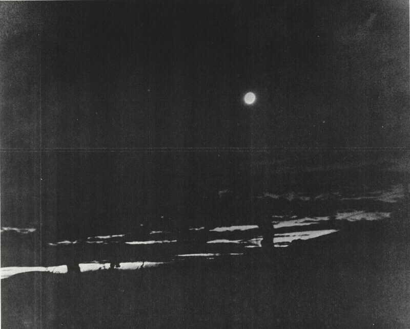
La disposition finale des 35 cas est résumée dans le tableau 1. Les figures sont considérées être représentatives
des cas photographiques d'ovnis. C'est-à-dire que, globalement, ¼ sont sont des fabrications, ¼ sont
des méprises, ¼ ont un contenu informatif si médiocre
qu'ils ne peuvent être soumis à une analyse, et ¼ sont clairement enregistrés mais manquent de données
suffisantes pour une analyse. Les cas résiduels véritablement intriguants constituent au plus un très faible
pourcentage.
En plus des cas actuels, 18 rapports plus anciens, dont certains pas des avocats de l'existence des "soucoupes
volantes", ont également été étudiés.
Sur les 35 cas, seuls ceux pour lesquels la nature des éléments ou du crédit du témoin ont été jugés avoir la plus
haute probabilité a priori de produire la preuve d'un phénomène inconnu ont reçu la 1ère priorité pour étude.
Le tableau 2 montre les classifications finalement affectées à ces cas de 1ère priorité. Sur eux quelques 60 %
furent trouvés comme étant identifiables ou manquant de valeur probante. 2 cas (suite sur p. 119) ont survécu à
l'analyse : Great Falls (film de 2 sources lumineuses
brillantes difficiles à reconcilier avec des appareils connus) et
McMinnville (2 photographies d'un appareil en forme de
soucoupe).
Tableau 1 - Classification de 35 cas photographiques actuels
| Preuve de fabrication probable |
9 |
| Phénomènes naturels ou d'origine humaine mal identifié |
7 |
| Données insuffisantes pour analyse (clichés pris de nuit, sources ponctuelles, blobs amorphes, etc.) |
12 |
| Données non concluantes (objets inhabituels non identifiés montrés, mais peu ou pas d'analyse possible ;
fabrications possibles)
|
7 |
| Non identifiés après analyse (objets réels avec haute étrangeté) |
0 |
| Total |
35 |
Tableau 2 - Classification de 11 cas de 1ère priorité
| Incohérences entre témoignage et photos, incohérences internes dans les photos, ou
preuve de fabrication
|
| Barra da Tijuca |
| North Eastern |
| North Pacific |
| Santa Ana |
| Phénomènes naturels ou d'origine humaine identifiés |
| Fort Belvoir |
| Vandenberg AFB |
| Tremonton |
| Pas favorable à l'analyse |
Calgary |
| Non identifié après analyse (indication d'objets réels avec haute étrangeté), mauvaise identification
concevable mais peu probable d'oiseaux, avions, etc.
|
Great Falls |
| Clairement soit une fabrication soit un objet extraordinaire ("soucoupe volante") |
McMinnville |
La sélection de cas "classiques" plus anciens ayant été limitée, il est probable que le "residu" de cas
photographiques inexpliqués ait pu être augmenté bien au-delà de ces 3 cas s'il y avait des recherches
supplémentaires. Qu'une valeur probante serait trouvée ou non est un sujet de spéculation.
Conclusions
Notre expérience nous amène également à conclure que les cas photographiques peuvent mieux être sélectionnés pour
étudie et analysés sur la base des critères suivants :
-
Evaluation subjective : Divers facteurs photographiques (mise au point, clareté, piqué, contraste) et le
témoignage se combinent-ils pour faire apparaître le cas crédible ? A-t-il un potentiel de fournir des éléments
probants de la réalité d'un phénomène inhabituel ?
- Phénomènes connus : Un phénomène connu quelconque est-il rationnellement acceptable comme explication de
l'observation ? Les phénomènes envisagés doivent être basés sur une large expérience des effets météorologiques,
astronomiques, optiques et photographiques. Le signalement
peut-il être un cas d'interprétation erronée ?
- Fabrications : Le cas peut-il être accepté comme ayant été fait de bonne foi ? Y a-t-il des signes
quelconques de bidouillage du négatif ? (les négatifs ou épreuves d'origine sont-ils disponibles ?) Les négatifs
constituent-ils une séquence continue ? La mise au point, la netteté et autres caractéristiques quantitativement
en accord avec les observations prétendues ? Les lumières et ombres intrisèquement cohérentes sur chaque photo ?
- Cohérence avec le témoignage : En plus de la preuve intrinsèque des photographies en elles-mêmes, les
photographies sont-elles cohérentes avec le témoignage du témoin ? L'éclairate est-il cohérent avec l'heure
prétendue et la direction de l'observation ? Les intervalles de temps entre photos sont-ils cohérents avec le
témoignage ?
- Test physiques et géométriques : Quels caractéristiques particulières suggèrent les tests ? L'objet
est-il devant ou derrière telle ou telle élément du paysage ? Le contraste et la mise au point sont-ils cohérent
avec la distance prétendue ? Que peut-on apprendre des mouvements et des intervalles de temps ? La trajectoire de
vol peut-elle être estimée d'après la séquence des positions et les tailles angulaires ?
L'étude du Colorado d'indices photographiques d'ovnis n'est pas parvenue à révéler des preuves concluantes de
l'existence des "soucoupes volantes". Pas plus qu'elle n'a pu, bien sûr, établir que de tels objets n'existent pas.
Je pense qu'il est significatif, cependant, qu'un certain nombre des cas "classiques" ayant reçu la plus grande
publicité aient été soit identifiés soit montrés comme étant de peu de valeur probante dans l'étude présente. Cette
conclusion suggère que une grande partie de la question de la réalité des "soucoupes volantes" a été construite sur
une recherche très insatisfaisante dans des rapports ayant reçu une large publicité. Des exemples de tels cas, dont
la réalité a été rejetée après une étude intensive par le projet, sont resumés brièvement ci-dessous :
Barra da Tijuca, Brésil
(cas 48) : Un photographe de magazine et un journaliste auraient vu
et fait 5 photographies d'un grand disque qui les aurait survolés. La séquence photographique montre le disque
approchant (sur la tranche) à distance, et passant by in a credible series. Un rapport sur le cas par
Olavo T. Fontès, du Brésil APRO, 1961
les déclare authentiques
et prétend établir leur authenticité par des documents top-secret
de dossiers
de l'Armée de l'Air Brésilienne conservés depuis . Les documents prétendent démontrer l'impossibilité
absolue d'un canular
. Une étude de photographies
aggrandies à partir de copies de l'APRO montre que le disque dans la
4ème photographie (planche 30) est clairement illuminé depuis la gauche, avec des ombres évidentes, mais
qu'un palmier comme un autre feuillage confus sur le flanc de la colline en-dessous apparaît illuminé depuis la
droite. L'anomalie fut en premier mise en avant par Donald Howard Menzel et Boyd (1963).
North Eastern (cas 53) : 2 photographies montre un objet brillant
et amorphe qui aurait swept past 4 garçons en train de photographier la
Lune de nuit. L'image sur les photographies
suggère de manière frappante un objet semblable à une assiette sur lesquel on aurait pas fait le point, soutenu par
une main et un bras humain et photographié par exposition dans le temps. Selon le rapport d'origine
[NICAP, 1965], le "bras" était une décharge
gazeuse invisible venant de l'ovni. Une photographie (planche 9) démontrant comment une telle image peut être
fabriquée a été réalisée en scotchant une assiette à un petit support. La transparence apparente de la décharge
gazeuse
a été simulée en bougeant le bras pendant l'exposition dans le temps. A la lumière d'une telle
reproduction simple de ces photographies, j'ai conclut que ce cas n'a pas de valeur probante.
Fort Belvoir, Virginie (cas 50) : 6 expositions faites sur cette
base de l'Armée montre un objet en forme d'anneau enveloppé dans un nuage blanc puffy. Les photographies furent
proclamées être les 1ères photos publiées de l'ovni Amazing en forme d'anneau
[Rankow, 1967].
Des Aides de l'officier commandant à Fort Belvoir démontrèrent à un enquêteur du projet qu'il s'agissait d'un nuage
vortex généré par des démonstrations de bombe atomique fréquemment menées à la base il y a des années. Une
identification positive fut obtenue.
Pacifique Nord (cas 57) : 3 garçons dans leur jardin
photographièrent un disque qui serait passé au-dessus d'eux. L'objet ne fut signalé par aucun autre témoin.
L'incident reçu une publicité considérable et les 2 photographies furent publiées par
l'APRO. Dans une interview les garçons insistèrent que le fait qu'ils
avaient reconstitué l'évément précisément et que l'intervalle de temps entre les 2 photographies était très court,
environ 8 s ; cependant, le motif de nuages était nettement différent. Confrontés séparément avec l'anomalie
évidente dans la structure des nuages entre les 2 photographis, les garçons dirent chacun qu'ils ne pouvaient pas
l'expliquer, mais réaffirmèrent l'histoire de l'observation. Les photographies ne peuvent donc être considérées
comme une preuve satisfaisante de l'existence de "soucoupes volantes."
Santa Ana, Californie (cas 52) : Un ingénieur du traffic routier,
de bonne réputation, avec d'excellentes références, et avec une expérience d'ancier policier, aurait vu et fait 3
photographies d'un disque métallique et une 4ème photographie d'un anneau de fumée vortex supposément laissé par le
disque parti. Une interruption des transmissions radio de son véhicule, qui aurait été associée à la présence du
disque, fut confirmée par le superviseur de l'ingénieur. La série de photographies a été largement publiée et
largement considérée comme un des meilleurs cas.
Une enquête détaillée révéla de incohérences sérieuses. Par exemple, une étude des données météo dans les stations
environnantes indique qu'une première couverture nuageuse du matin s'était entièrement dissipée bien avant que le
signalement n'ait été fait, bien que la 4ème photographie montre un fond de nuages gris, modérément dense. D'autres
circonstances entourant ces photographies réduisent encore leur valeur probative.
Au cours de mon étude je parvins à simuler efficacement les 3 premières photographies en suspendant une maquette par
un fil attaqué à un tube reposant sur le toit d'un camion et en le photographiant (planche 8). Sans présuposer de la
véracité ou de la non-véracité de l'histoire du témoin, ceci m'a mené à conclure que le cas est de peu de valeur
probative.
Vandenberg AFB, Californie (cas 51) : Des films de suivi d'un
lancer de fusée montrent un objet brillant fonçant apparemment en l'air derrière la fusée juste après l'allumage du
second étage. Les films furent d'abord décrits dans un livre [Baker, 1967]. La séquence
de film fut prise très au sérieux parce que plusieurs caméras en différents lieux enregistrèrent l'objet
simultanément. L'intérêt pour ce cas fut augmenté par sa ressemblance avec un certain nombre de récits apocryphes
d'ovnis accompagnant des fusées. Le projet Colorado obtint une fois les films par le biais des canaux officiels. Les
données de suivi montrèrent que la fusée se déplaçait vers l'horizon derrière la position calculée de
Vénus à ce moment.
Pour résumer les conclusions relatives aux photographies d'ovnis :
- Environ la moitié des rapports photographiques sont clairement identifiables comme des phénomènes connus ou
peuvent être démontrés comme contenant des incohérences internes géométriques ou autres.
- Environ la moitié peut en définitive être classé comme non concluants ou présentant des données insuffisantes
pour fournir les éléments probants d'un phénomène inconnu. La plupart des cas à témoin unique doivent tomber dans
cette dernière catégorie. La plupart des photographies de nuit, d'objets à source ponctuelle et d'objets amorphes
sans paysage en arrière ou avant-plan doivent être reléguées dans cette catégorie pour manque de de tests
quantitatifs satisfaisants pouvant leur être appliqués.
- Un certain nombre de cas initialement décrits publiquement par des enthousiastes des ovnis comme représentatifs
des meilleures preuves de la réalité d'appareils extraordinaires ont été identifiés de manière concluante comme
étant des phénomènes ordinaires ou montrés avoir des incohérences internes sérieuses.
- Le nombre de cas identifiés ou frauduleux n'est pas pertinent pour conclure à l'existence ou la non-existence
d'objet extraordinaires ou de "soucoupes volantes".
- Une très petite fraction de cas photographiques intéressants et potentiellement identifiables reste non
identifiée.
Certaines conclusions relatives à ces cas photographiques résiduels sont :
-
Aucun d'entre eux n'établit de manière concluante l'existence de "soucoupes volantes" ou de quelconque appareils
extraordinaires, ou d'un phénomène jusqu'ici inconnu. Pour n'importe quel de ces cas, indépendamment de son niveau
d'étrangeté ou d'intrigue, il est toujours possible d'"expliquer" les observations, soit en faisant l'hypothèse de
circonstances extraordinaires, soit en supposant un
canular. Cela revient à dire qu'aucun des cas
photographiques résiduels enquêtés ici n'est suffisamment contraignant pour être concluant à lui seul.
- Certains des cas sont suffisamment explicites pour que le choix se limite à l'existence d'un appareil
extraordinaire ou à un canular.
- Le groupe résiduel de non identifié qui n'est pas incohérent avec l'hypothèse que des appareils inconnus et
extraordinaires ont pénétré l'espace aérien des Etats-Unis, aucun ne dégage suffisamment d'éléments pour établir
cette hypothèse.
En résumé, près de 10 % des cas photographiques peuvent être initialement sélectionnés comme cas de "1ère priorité",
i.e. suffisamment intéressants et détaillés pour être enquêtés. Après enquête, il reste un petit résidu, de l'ordre
de 2 % de l'ensemble des cas, qui apparaît représenter des objets aériens bien enregistrés mais non identifiés -
i.e. des ovnis. Cependant les les éléments sont insuffisants pour affirmer que quelconque d'entre eux représente
phénomène inhabituel ou extraordinaire. Nous ne trouvons aucun élément concluant d'appareils non identifiés ou de
"soucoupes volantes". Des données photographiques ont été piètrement présentées dans le passé, et la fréquence de
"soucoupes volantes" hypothétiques semble bien plus faible qu'elle n'a été populairement supposée ; il pourrait être
de zéro. Les données présentes sont compatibles avec, mais n'établissent ni l'hypothèse que :
-
le phénomène ovni entier est le produit de méprises, témoignages erronés, et fabrication, ni que
- une très petite portion du phénomène ovni implique des événements extraordinaires.
Références
-
Baker, R. M., Jr. et Maud W. Makemson, An introduction to astrodynamics, N. Y.:
Academic Press, 1967.
- Menzel, Donald Howard and Lyle G. Boyd, The world of flying saucers, Garden
City, N. Y.: Doubleday, 1963.
- Rankow, Ralph. The Ring-Shaped UFO, (Flying Saucers, n° 4, Automne 1967).
- Ruppelt, Edward J., The Report on Unidentified Flying Objects, Garden City,
N. Y.: Doubleday, 1956.